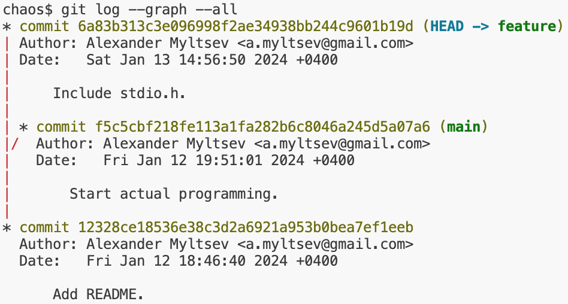
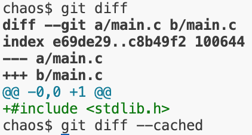
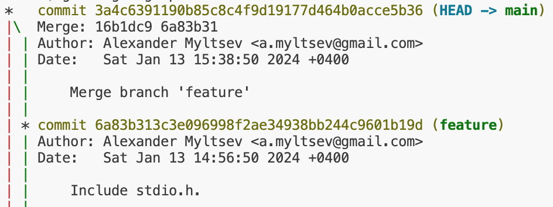

git
$ whatis git | grep stupid
git(1) - the stupid content tracker
xkcd, объясняющий, как устроена лекция
Tracking work on projects
Создадим репозиторий — директорию, в которой будет храниться исходный код нашего проекта:
~$ mkdir chaos
~$ cd chaos
chaos$ git init -b main
Initialized empty Git repository in /home/myltsev/chaos/.git/
Напишем для нашего проекта README и сохраним его с помощью git:
chaos$ echo 'A project to develop a new operating system.' >README
chaos$ git add README
chaos$ git commit -m 'Add README.'
[main (root-commit) 12328ce] Add README.
1 file changed, 1 insertion(+)
create mode 100644 README
Так началась история нашего проекта:
chaos$ git log
commit 12328ce18536e38c3d2a6921a953b0bea7ef1eeb (HEAD -> main)
Author: Alexander Myltsev <a.myltsev@gmail.com>
Date: Fri Jan 12 18:46:40 2024 +0400
Add README.
Добавим ещё файл, чтобы в истории проекта было два разных записанных момента:
chaos$ touch main.c
chaos$ git add main.c
chaos$ git commit
[main f5c5cbf] Start actual programming.
1 file changed, 0 insertions(+), 0 deletions(-)
create mode 100644 main.c
Beautiful tree model
Посмотрим, как именно git хранит содержимое нашего файла. Он приписывает спереди
к содержимому "blob ДЛИНА\0" и берёт от результата хэш SHA-1, а потом
складывает содержимое в соответствующий файл на диске:
chaos$ echo -e 'blob 45\0A project to develop a new operating system.' | sha1sum
e750a68af1f2f3712d7f43ad5d64a8d363b2568f -
chaos$ ls .git/objects/e7
50a68af1f2f3712d7f43ad5d64a8d363b2568f
chaos$ python3 -c 'import zlib; print(zlib.decompress(open(".git/objects/e7/50a68af1f2f3712d7f43ad5d64a8d363b2568f", "rb").read()))'
b'blob 45\x00A project to develop a new operating system.\n'
Таким образом, git использует content-addressable storage: данное содержимое файла всегда хранится под одним и тем же именем. Директория будет храниться как список имён файлов с указанием хешей их содержимого:
chaos$ git cat-file -p bd452a89d490ea711965f9688cc60559afd25e33
100644 blob e750a68af1f2f3712d7f43ad5d64a8d363b2568f README
100644 blob e69de29bb2d1d6434b8b29ae775ad8c2e48c5391 main.c
Коммит (записанный момент в истории) хранится как ссылка на корневую директорию и набор метаинформации (имя автора, метка времени, описание коммита, идентификатор родительского коммита и др.):
chaos$ git cat-file -p HEAD
tree bd452a89d490ea711965f9688cc60559afd25e33
parent 12328ce18536e38c3d2a6921a953b0bea7ef1eeb
author Alexander Myltsev <a.myltsev@gmail.com> 1705074661 +0400
committer Alexander Myltsev <a.myltsev@gmail.com> 1705074661 +0400
Start actual programming.
Таким образом, объекты в хранилище, ссылаясь друг на друга, образуют ациклический направленный граф (DAG).
У нас в репозитории сейчас два коммита,
но один из них имеет специальное значение: он «самый актуальный»,
соответствует состоянию рабочей копии и станет родителем
следующего коммита. Этот коммит будем называть головным (HEAD).
Скорее всего нам потребуется в разные моменты времени считать головным разные
коммиты — например, мы хотим работать над несколькими задачами, переключаясь
между ними, и каждой задаче соответствует своя последовательность вносимых
изменений. Понятно, как это сделать: запишем идентификаторы этих коммитов в файлы с
понятными именами в директории heads и дадим пользователю возможность
обращаться к коммитам по этим именам.
Посмотрим, какие heads есть сейчас в нашем репозитории:
$ ls .git/refs/heads
main
$ cat .git/refs/heads/main
f5c5cbf218fe113a1fa282b6c8046a245d5a07a6
А вот какой head на самом деле является сейчас головным коммитом:
$ cat .git/HEAD
ref: refs/heads/main
Каждый head-коммит вместе с цепочкой его предшественников принято называть
веткой разработки (branch).
Теперь у нас есть возможность обращаться к коммитам как по их SHA1-хэшу,
так и по названиям из heads. Чтобы добыть хэш коммита по имени, есть утилита
git rev-parse:
$ git rev-parse main
f5c5cbf218fe113a1fa282b6c8046a245d5a07a6
$ git rev-parse HEAD
f5c5cbf218fe113a1fa282b6c8046a245d5a07a6
На самом деле SHA1-хэш необязательно писать полностью — достаточно уникального префикса:
$ git rev-parse f5c5
f5c5cbf218fe113a1fa282b6c8046a245d5a07a6
Есть также нотация для обращения к родительским коммитам:
$ git rev-parse HEAD^ # ^ — первый родитель
12328ce18536e38c3d2a6921a953b0bea7ef1eeb
$ git rev-parse HEAD~1 # ~n — n-тый прародитель
12328ce18536e38c3d2a6921a953b0bea7ef1eeb
Just memorize these shell commands
branches
Создадим дополнительную ветку разработки из предыдущего коммита:
$ git switch -c feature HEAD^
Switched to a new branch 'feature'
Теперь у нас две ветки, из которых активна ветка feature:
$ git branch
* feature
main
$ ls
README
Как видно, в этом коммите ещё нет файла main.c.
С помощью git switch можно переключаться между ветками:
chaos$ git switch main
Switched to branch 'main'
chaos$ ls
README main.c
Сейчас история коммитов выглядит так:

Переключимся на ветку feature и сделаем там новый коммит:
$ git switch feature
Switched to branch 'feature'
$ echo '#include <stdio.h>' >main.c
$ git add main.c
$ git commit -m 'Include stdio.h.'
[feature 6a83b31] Include stdio.h.
1 file changed, 1 insertion(+)
create mode 100644 main.c
Теперь у нас есть две ветки, которые не являются предками друг друга (diverging branches): 
index
В рабочей копии могут быть файлы, которые git не отслеживает, — например, объектные, исполняемые и временные файлы. Кроме того, не все изменения в отслеживаемых файлах обязаны включаться в следующий коммит.
Чтобы подготовить содержимое следующего коммита, в git есть
индекс (index или staging area). Получается такой маршрут:
- Правим файлы в рабочей копии (
vim). - Копируем изменения в индекс (
git addи др.). - Создаём коммит с содержимым индекса (
git commit).
Попробуем сделать изменения, но не добавлять их в индекс, а сразу сделать новый коммит:
$ echo '#include <stdlib.h>' >>main.c
$ git commit
On branch main
Changes not staged for commit:
(use "git add <file>..." to update what will be committed)
(use "git restore <file>..." to discard changes in working directory)
modified: main.c
no changes added to commit (use "git add" and/or "git commit -a")
Наши изменения сейчас есть только в рабочей копии, но не в индексе: 
Добавим их в индекс и создадим новый коммит:
chaos$ git add main.c
chaos$ git diff --cached --stat
main.c | 1 +
1 file changed, 1 insertion(+)
chaos$ git commit -m 'Include stdlib.h.'
[main 16b1dc9] Include stdlib.h.
1 file changed, 1 insertion(+)
Можно добавлять в индекс не все изменения в файле,
например, с помощью интерактивной команды git add -p
(она будет спрашивать вас отдельно про каждое изменение).
Восстановить содержимое индекса из HEAD можно
с помощью git restore --staged [-p].
Все изменения в отслеживаемых файлах можно закоммитить
с помощью git commit -a.
merging
Для слияния изменений в разных ветках имеется команда git merge.
Попытаемся учесть в main изменения, сделанные в feature.
$ git merge feature
Auto-merging main.c
CONFLICT (add/add): Merge conflict in main.c
Automatic merge failed; fix conflicts and then commit the result.
git не знает, как объединить изменения, сделанные в двух ветках.
Поэтому он оставляет в файле main.c маркеры конфликта,
а сам файл в индексе помечен как unmerged:
chaos$ cat main.c
««««««« HEAD
#include <stdlib.h>
=======
#include <stdio.h>
»»»»»»» feature
chaos$ git status
On branch main
You have unmerged paths.
(fix conflicts and run "git commit")
(use "git merge --abort" to abort the merge)
Unmerged paths:
(use "git add <file>..." to mark resolution)
both added: main.c
no changes added to commit (use "git add" and/or "git commit -a")
Чтобы завершить слияние, нужно отредактировать unmerged файлы и добавить в индекс их правильные версии, а затем создать коммит:
$ vim main.c
$ git add main.c
$ git commit
[main 3a4c639] Merge branch 'feature'
Созданный коммит является слиянием (merge commit), то есть имеет больше одного родителя:
$ git show
commit 3a4c6391190b85c8c4f9d19177d464b0acce5b36 (HEAD -> main)
Merge: 16b1dc9 6a83b31
...
git log --graph отображает это соответствующим образом:

Попробуем теперь сделать обратное слияние: добавить в feature изменения, сделанные в main.
$ git switch feature
Switched to branch 'feature'
chaos$ git merge main
Updating 6a83b31..3a4c639
Fast-forward
main.c | 1 +
1 file changed, 1 insertion(+)
Поскольку feature была предком main, слияние произошло
более простым способом — feature теперь просто является синонимом
main:

Такой способ слияния называется перемоткой (fast forward). Нового коммита при этом не создаётся.
remotes
Для взаимодействия с другими репозиториями существует механизм
remotes. Я сделал себе пустой репозиторий на gitlab.myltsev.ru
и добавляю его как remote с именем origin:
$ git remote add origin git@gitlab.myltsev.ru:myltsev/chaos.git
Отправим туда нашу ветку main:
$ git push origin main
Enumerating objects: 15, done.
Counting objects: 100% (15/15), done.
Delta compression using up to 8 threads
Compressing objects: 100% (9/9), done.
Writing objects: 100% (15/15), 1.28 KiB | 1.28 MiB/s, done.
Total 15 (delta 1), reused 0 (delta 0), pack-reused 0
To ssh://gitlab.myltsev.ru/myltsev/chaos.git
* [new branch] main -> main
Можно добавлять новые коммиты в ветку main и отправлять их туда же той же
командой. Если, как правило, мы будем
отправлять коммиты из main именно в эту ветку этого
remote, то имеет смысл сообщить git-у, что это ветка является
для main апстримом. Для этого добавим опцию -u/--set-upstream:
$ git push -u origin main
branch 'main' set up to track 'origin/main'.
Everything up-to-date
В файле .git/config появилась соответствующая запись:
[branch "main"]
remote = origin
merge = refs/heads/main
git push будет по умолчанию работать именно с апстримной веткой.
В локальном репозитории хранятся копии головных коммитов из remotes:
$ cat .git/refs/remotes/origin/main
3a4c6391190b85c8c4f9d19177d464b0acce5b36
git switch умеет догадываться о том, что локальную ветку нужно создать из
remote-ветки с таким же названием:
$ git switch tmp
branch 'tmp' set up to track 'origin/tmp'.
Switched to a new branch 'tmp'
git fetch обновляет refs/remotes и приносит
в локальное хранилище недостающие объекты.
git pull — это сочетание fetch + merge:
обновить локальные копии remote-коммитов и провести слияние.
Если локально новых коммитов в ветке нет, а в remote они появились,
то fetch принесёт их в локальный репозиторий, а merge
сведётся к перемотке:
$ git pull
Updating 3a4c639..20992d8
Fast-forward
main.c | 4 ++++
1 file changed, 4 insertions(+)
git push по умолчанию работает, только если remote-ветка
является предком локальной (то есть её можно перемотать
до локальной). Если remote-ветка и локальная ветка не являются
предками друг друга (divergent branches), то push
отказывается работать:
$ git push
To ssh://gitlab.myltsev.ru/myltsev/chaos.git
! [rejected] main -> main (fetch first)
error: failed to push some refs to 'ssh://gitlab.myltsev.ru/myltsev/chaos.git'
hint: Updates were rejected because the remote contains work that you do not
hint: have locally. This is usually caused by another repository pushing to
hint: the same ref. If you want to integrate the remote changes, use
hint: 'git pull' before pushing again.
hint: See the 'Note about fast-forwards' in 'git push --help' for details.
Беда в том, что по умолчанию git pull в этой ситуации тоже по умолчанию ведёт себя несговорчиво:
$ git pull
remote: Enumerating objects: 5, done.
remote: Counting objects: 100% (5/5), done.
remote: Compressing objects: 100% (3/3), done.
remote: Total 3 (delta 1), reused 0 (delta 0), pack-reused 0
Unpacking objects: 100% (3/3), 281 bytes | 140.00 KiB/s, done.
From ssh://gitlab.myltsev.ru/myltsev/chaos
20992d8..f54e8cf main -> origin/main
hint: You have divergent branches and need to specify how to reconcile them.
hint: You can do so by running one of the following commands sometime before
hint: your next pull:
hint:
hint: git config pull.rebase false # merge
hint: git config pull.rebase true # rebase
hint: git config pull.ff only # fast-forward only
hint:
hint: You can replace "git config" with "git config --global" to set a default
hint: preference for all repositories. You can also pass --rebase, --no-rebase,
hint: or --ff-only on the command line to override the configured default per
hint: invocation.
fatal: Need to specify how to reconcile divergent branches.
Безопасным вариантом в данном случае является опция
--no-rebase, которая выполнит слияние локальной и удалённой
ветки.
rebasing
⚠ Here be dragons!